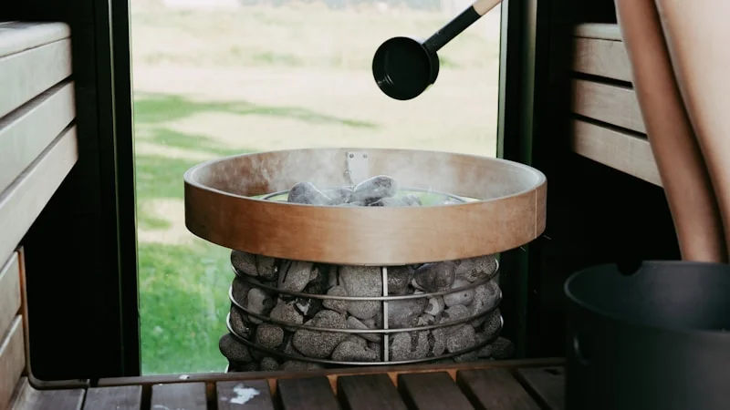

朝起きた瞬間から疲れているあなたへ。冷えと自律神経を整える、東洋医学の「ゆる温活」養生法
2026.06.29

「しっかり寝たはずなのに、朝起きた瞬間から体が鉛のように重い…」「布団に入っても手足が冷たくて眠れず、夜中に何度も目が覚めてしまう」。そんな、休んでも回復しない慢性的な疲労感や冷えに悩まされていませんか？「歳のせいかもしれない」「忙しいから仕方ない」と諦めてしまうのは早計です。その不調は、日々のストレスや気候の変化によって自律神経が乱れ、体内の巡りが滞っているという、体からの切実なサインです。今こそ、自分の体の声に耳を傾け、植物のちからや東洋医学の知恵を借りた「養生（セルフケア）」を始めるタイミングかもしれません。
なぜ疲れが抜けない？「冷え」と「自律神経」の密接な関係
なぜ、これほどまでに疲れが抜けず、体が冷えてしまうのでしょうか。その根本的な原因は、自律神経のアンバランスと、東洋医学でいう「気・血・水（き・けつ・すい）」の滞りにあります。
現代社会のストレスや不規則な生活、PC・スマートフォンの長時間使用は、交感神経を過剰に優位にします。交感神経が働きすぎると、血管が強く収縮し、特に手足の末梢血管への血流が著しく低下します。これにより、酸素や栄養素が全身の細胞に行き渡らなくなり、疲労物質である乳酸などの老廃物が体内に蓄積されてしまいます。これが、慢性的な疲労感と頑固な冷えの正体です。
東洋医学では、この状態を「気（生命エネルギー）」の巡りが悪くなる「気滞（きたい）」、そして血液の巡りが滞る「瘀血（おけつ）」として捉えます。気と血は互いに影響し合っており、ストレスによって気が滞ると、血を押し出す力も弱まり、結果として熱（体温）を全身に運ぶことができなくなります。特に下半身や指先が冷えるのは、血が末端まで届いていない証拠です。この状態を放置すると、胃腸などの内臓の働きが低下し、消化不良や免疫力の低下、さらには精神的な不安定さまで引き起こす悪循環に陥ってしまいます。不調を根本から解消するためには、自律神経を副交感神経（リラックスモード）に切り替え、温活によって「気・血」の巡りをスムーズに整えることが不可欠なのです。

明日からできる！自律神経を整え体を温めるセルフケア3選
薬に頼る前に、まずは自宅で今すぐ始められる具体的な養生法を3つご紹介します。どれも解剖生理学的・東洋医学的な根拠に基づいた、効果的なアプローチです。
1. 万能のツボ「三陰交（さんいんこう）」のツボ押し
冷えと自律神経の乱れ、そして女性特有の不調に最も効果的とされるのが、足の内側にあるツボ「三陰交」の刺激です。
- 手順：内くるぶしの最も高い場所から、指幅4本分（人差し指から小指まで）上がったところの、骨のキワにある陥凹部（へこみ）を探します。ここを親指の腹を使い、息を吐きながら3秒間かけて心地よい強さで押し、息を吸いながら3秒かけて緩めます。これを左右交互に各10回繰り返します。
- 根拠：三陰交は、東洋医学において水分代謝や血流、エネルギーを司る「脾（ひ）・肝（かん）・腎（じん）」の3つの経絡（エネルギーの通り道）が交わる重要なポイントです。ここを物理的に刺激することで、骨盤内の血流が劇的に改善され、冷え性の緩和やホルモンバランスの調整、そして自律神経の安定にダイレクトに繋がります。毎日お風呂上がりや寝る前に行うのが効果的です。
2. 「仙骨温め」と「腹式呼吸」による自律神経のリセット
手軽に自律神経を整え、全身を温めるには「仙骨（お尻の割れ目の少し上、平らな骨）」を温めながら行う深呼吸が極めて有効です。
- 手順：衣服の上から、仙骨の位置に使い捨てカイロを貼るか、温かいホットタオルを当てます。その状態で仰向けになり、目を閉じます。まず、お腹を膨らませながら4秒かけて鼻から息を吸い、その後、お腹を凹ませながら8秒かけて口から細く長く息を吐き出します。これを5分間繰り返します。
- 根拠：仙骨の周辺には、リラックスを司る「副交感神経」の束（骨盤内臓神経）が集中しています。この部位を外側から直接温めることで、副交感神経が物理的に刺激され、血管が拡張します。さらに、吐く息を意識的に長くする「腹式呼吸」を組み合わせることで、自律神経のスイッチが交感神経から副交感神経へとスムーズに切り替わり、末梢血管まで血流が再開し、全身が芯からポカポカと温まります。
3. 40度・15分の「分割温浴法」
入浴は最高の温活でありセルフケアですが、入り方を間違えると逆に体を疲れさせてしまいます。体に負担をかけずに芯から温まる「分割温浴」を取り入れましょう。
- 手順：お湯の温度は「40度」のぬるめに設定します。まず湯船に5分間肩までしっかりと浸かり、一度お湯から上がって髪や体を洗います（約5分）。その後、再び湯船に10分間浸かります。合計で15分間湯船に入る計算です。
- 根拠：41度以上の熱いお湯は交感神経を刺激し、体を戦闘モード（緊張状態）にしてしまいます。40度のぬるめのお湯は副交感神経を優位にし、筋肉の緊張を物理的にほぐします。また、一度お湯から上がる「分割温浴」にすることで、急激な血圧変動（ヒートショック現象など）を防ぎ、心臓への負担を減らしながら、体の深部体温を効率的に上昇させることができます。これにより、お風呂上がりの湯冷めを防ぎ、質の高い睡眠へとスムーズに導かれます。
実践のヒント
セルフケアや温活は、1日だけ行っても大きな劇的変化は感じにくいものです。大切なのは「毎日少しずつ、心地よいと感じる範囲で続けること」。特に夜、スマートフォンを置いて静かな環境で行う5分間のツボ押しや深呼吸は、脳の疲労を取り除く最高のリセット時間になります。完璧を目指さず、自分の体を愛おしむ時間として、楽しんで取り組んでみてください。
植物のちからを借りて、「わたしに戻る」時間を
毎日を慌ただしく過ごす中で、自分のケアを後回しにしていませんか？疲れや冷えは、体が発している「少し休んでほしい」という大切なメッセージです。今回ご紹介したツボ押し、仙骨温め、分割温浴は、どれも今日から始められる簡単な養生法です。ぜひ、今夜から1つでも取り入れてみてください。
しかし、「忙しくてツボを押す時間すらない」「疲れてお風呂をゆっくり沸かす気力もない」という日もありますよね。そんな時は、頑張るのをやめて、自然の恵みに身を委ねてみましょう。
忙しい日々のセルフケアには、「fucuu（フクウ）」の100%天然・無添加の生薬入浴剤に頼るのもひとつの選択肢です。厳選された生薬（和漢植物）のちからをそのままお湯に溶かし込み、あなたのバスルームを極上の養生空間へと変えます。お湯に浸かるだけで、生薬の温浴効果が体を芯から温め、国産アロマの温かく穏やかな香りが、乱れた自律神経を優しく整えます。何も考えず、ただ温かいお湯に身を浸し、植物のちからで「わたしに戻る」時間。そんなフクフクとした幸福感を、あなたの日常にお届けできれば幸いです。
fucuuの生薬入浴剤・国産アロマは、BASEオンラインショップでご購入いただけます。
BASEで購入する